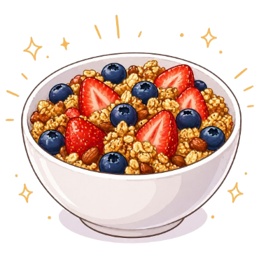
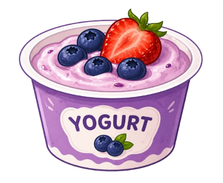
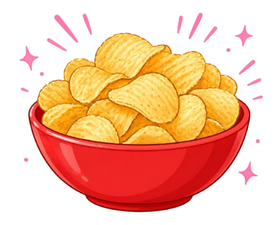
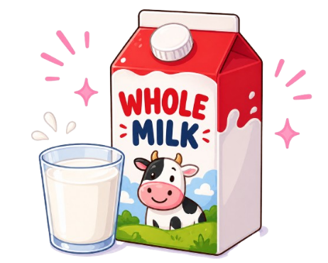
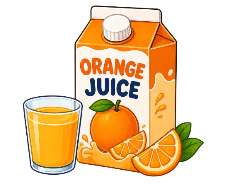
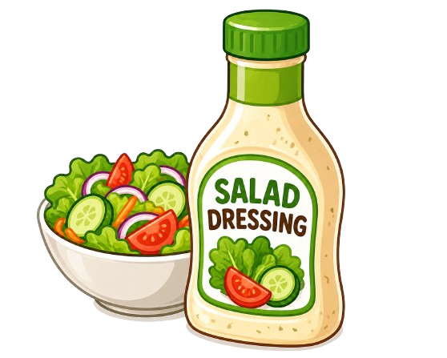

Granola has 7× more calories than a fresh apple per 100g. The oats are healthy, but portion size matters a lot!

Flavored yogurt can contain as much added sugar as a candy bar. Look for "plain" yogurt and add your own fruit instead!

Chips actually have fewer carbs than granola! But those extra calories come from fat, not something healthy oats have. So choose wisely.

Whole milk has fewer calories than flavored yogurt per 100g, plus calcium and vitamin D. The fat-free dairy fear? Mostly a myth.

OJ has nearly the same sugar per 100g as Coca-Cola with zero fiber to slow absorption. Eating the orange is a totally different story.

Caesar dressing packs more fat per 100g than potato chips. Two tablespoons can add 200+ calories to your "healthy" salad.
Numbers tell the real story. Always check what's actually in your food.
Compare foods on the same scale. Per 100g helps you see the real differences.
"Natural," "healthy," and "light" don't always mean what you think. Don't trust labels alone.